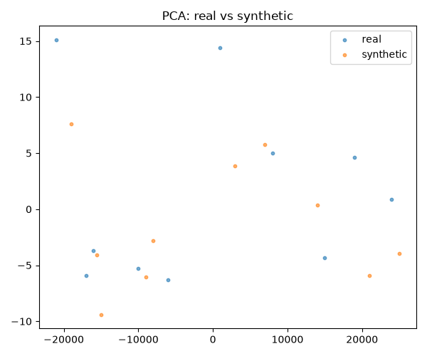
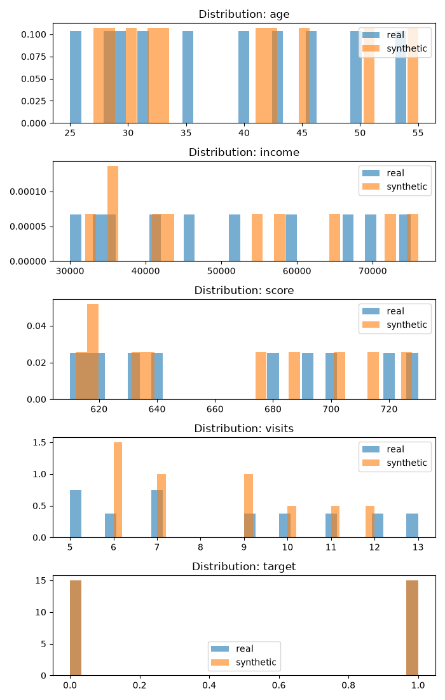
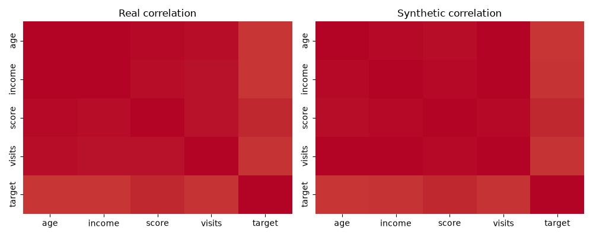

Task: classification · Target: target
{
"fidelity": {
"per_feature_mean_jsd": 0.47503994540049793,
"per_feature_mean_ks": 0.12000000000000006,
"per_feature_mean_wasserstein": 290.84,
"correlation_distance": 0.006492441999675345
},
"coverage": {
"precision": 1.0,
"recall": 1.0,
"density": 1.16,
"coverage": 1.0
},
"privacy": {
"syn_to_real_mean_nnd": 0.29197631270941,
"syn_to_real_min_nnd": 0.1322782106299684,
"syn_to_real_1pct_nnd": 0.1356548904716971,
"mia_auc_distance": 0.039999999999999994
},
"utility": {
"TSTR_AUC": 1.0,
"TRTS_AUC": 1.0
},
"rows_real": 10,
"rows_synthetic": 10
}



{
"age": {
"JSD": 0.5265537695468318,
"KS": 0.10000000000000009,
"Wasserstein": 1.0999999999999999
},
"income": {
"JSD": 0.6242803065512634,
"KS": 0.20000000000000004,
"Wasserstein": 1450.0
},
"score": {
"JSD": 0.624280306551264,
"KS": 0.10000000000000009,
"Wasserstein": 2.5
},
"visits": {
"JSD": 0.6000853443531302,
"KS": 0.2,
"Wasserstein": 0.6
},
"target": {
"JSD": 0.0,
"KS": 0.0,
"Wasserstein": 0.0
}
}